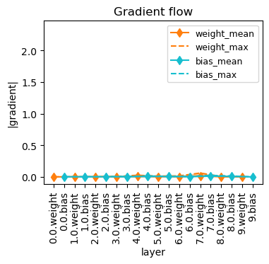
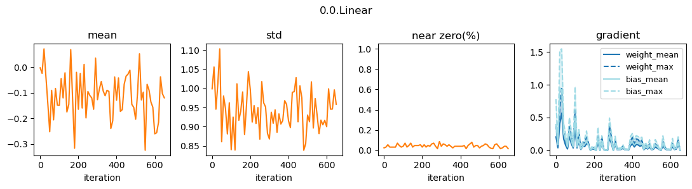
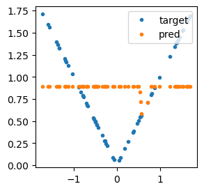
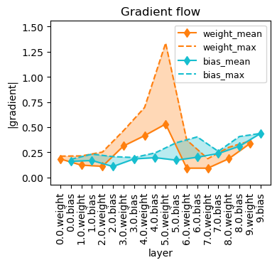
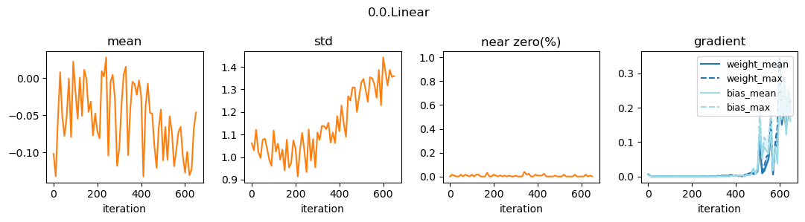
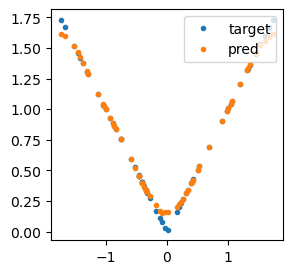

from wafer.basics import *Weight initialization
See effects of various activation on the output stats (mean and std); find emprically ‘good’
gains.
Gain
Consider a standard FNN with hidden layers of equal size. A bad initialization of weights (biases are initialized to zeros) leads to unstable signal flows, as the reponses after each layer may explode or vanish. The key to the classical Xavier initialization is the variance scaling sqrt(1/n), where n = (fan_in + fan_out)/2 is of the order of the layer width. However, due to the effect of non-linear activations, a slight correction is necessary, aka gain, to ensure zero-mean and one-std.
We can either demand the reponse (activation output) or the net input to a neuron to have one-std. The results are the two functions
calc_gain_kumarandcalc_gainthat compute the gain of anactngiven values of it and its derivative evaluated at 0.
refs:
calc_gain_kumar = lambda a,b: np.sqrt(1/(b*b*(1 + a*a))) #a: f(0), b: f'(0)
calc_gain = lambda a,b: np.sqrt(1/(a*a + b*b))Dying ReLU
Dying ReLU refers to the situation when a ReLU neuron is inactive for all inputs during training (aka dead) after an erroneous weight update. When this happens in the first layer and the whole layer is dead, the model stops learning. If this happens to any hidden layer, dead neurons may be reactivated.
For a deep-and-narrow FNN-ReLU network, this problem is more severe.
def lin(ni, no, actn=True):
res = nn.Linear(ni, no)
return nn.Sequential(res, nn.ReLU()) if actn else res
def mk_tst_model(ni, nh, no, n_layer=10):
layers = [lin(ni, nh)] + [lin(nh, nh) for _ in range(1,n_layer-1)] + [lin(nh, no, False)]
return nn.Sequential(*layers)xs = (torch.rand(3000, 1)*2 - 1)*np.sqrt(3)
ds = Dataset.from_dict({'x': xs, 'y': xs.abs()}).train_test_split(0.3).with_format('torch')
dls = mk_dls_from_ds(ds, lambda o: (o['x'], o['y']), bs=[64,128])Common initialization methods, i.e. Xavier and He, default_init, does not help. lsuv_init or orthogonal_ is slightly better.
Possible solutions:
- increase layer width (significant improvement).
- change activations.
- use ResNet-like architecture.
tst_model = mk_tst_model(1,2,1)
# default_init(tst_model)
lsuv_init(tst_model, xb=dls[0].one_batch()[0])
# lambda_init(tst_model, lambda w,b: (nn.init.orthogonal_(w), nn.init.zeros_(b)))opt = optim.Adam(tst_model.parameters())
crit = nn.L1Loss()
lstats = StatsCB(grad=True)
learn = Learner(tst_model, dls, opt=opt, loss_func=crit, cbs=[GradFlowCB(showbias=True), lstats], disp_every=2)learn.fit(20)| train_loss | test_loss | |
|---|---|---|
| 0 | 0.884249 | 0.815916 |
| 2 | 0.626629 | 0.642336 |
| 4 | 0.537691 | 0.559477 |
| 6 | 0.472850 | 0.494931 |
| 8 | 0.426832 | 0.456378 |
| 10 | 0.424512 | 0.456035 |
| 12 | 0.422784 | 0.455023 |
| 14 | 0.422345 | 0.453439 |
| 16 | 0.422001 | 0.451556 |
| 18 | 0.419790 | 0.451089 |

lstats.plot_layer(0)
show_preds(tst_model, *dls[0].one_batch())
RAI init
A new initialization, called randomized asymmetric initializer (RAI) is proposed in Lu Lu et al. Dying ReLU and Initialization: Theory and Numerical Examples, 2020 to alleviate the dying ReLU problem (lower probability of being “born-dead” or “train-to-dead”). It does so by tempering the symmetric weight distribution found in common initialization schemes.
tst_model = mk_tst_model(1,2,1)
rai_init(tst_model)opt = optim.Adam(tst_model.parameters())
crit = nn.L1Loss()
lstats = StatsCB(grad=True)
learn = Learner(tst_model, dls, opt=opt, loss_func=crit, cbs=[GradFlowCB(showbias=True), lstats], disp_every=2)learn.fit(20)| train_loss | test_loss | |
|---|---|---|
| 0 | 1.129895 | 1.115138 |
| 2 | 0.875230 | 0.855694 |
| 4 | 0.642533 | 0.645513 |
| 6 | 0.497863 | 0.519501 |
| 8 | 0.441317 | 0.472920 |
| 10 | 0.425380 | 0.459160 |
| 12 | 0.413404 | 0.440774 |
| 14 | 0.357549 | 0.329050 |
| 16 | 0.111896 | 0.095048 |
| 18 | 0.035309 | 0.030592 |

lstats.plot_layer(0)
show_preds(tst_model, *dls[0].one_batch())